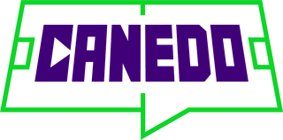

@vcanedoAtualizado em —, com jogos até —. Dados conferidos no oGol. Método e base completa no GitHub.
Na conta com pesos, a maior freguesia entre os 16 clássicos é —: o — tem índice — nos últimos 50 jogos. Toque em um clássico para ver o detalhe.
Aproveitamento do time dominante nos últimos 50 jogos oficiais, com peso por recência e por importância do jogo, mais um jogo extra para quem avançou em cada mata-mata. Os filtros escolhem a janela (últimos 50, 40, 30, 20 ou 10 jogos) e a competição dentro dela. O ranking é recalculado a cada combinação.
| # | Clássico | Dominante | Índice | Nível | Jogos | V | E | D | Jejum | Sem vencer | Última vitória | Jogos desde |
|---|
Com poucos jogos no filtro (menos de 12% da janela, mínimo 3), o clássico vai para o fim da lista. Jejum = escudo do time que está há mais jogos sem vencer o rival hoje, quantos jogos e a data da última vitória dele. Jogos desde = data do jogo mais antigo da janela escolhida. No clássico, à esquerda fica o escudo do dominante; nos casos de equilíbrio, o de quem tem mais vitórias na janela. Os mata-matas vencidos por cada lado aparecem no detalhe do clássico.
Aproveitamento do dominante nos últimos 10, 20, 30, 40 e 50 jogos, cada jogo valendo o mesmo. O índice simples é a média dos cinco recortes. Jejum = jogos seguidos sem vitória do freguês até hoje.
| Clássico | Dominante | Índice simples | 10 | 20 | 30 | 40 | 50 | Jejum |
|---|
—
Sem peso, do ponto de vista do dominante. Pênaltis contam como empate. Desde = data do jogo mais antigo do recorte.
| Últimos | V | E | D | GP | GC | Aprov. | Desde |
|---|
Do mais recente (canto superior esquerdo) ao mais antigo. Passe o dedo ou o mouse para ver o placar.
Vitória do dominanteEmpateVitória do freguêsJogo de mata-mata
Cada confronto eliminatório conta uma vez, como um jogo extra para quem avançou. Peso = recência do último jogo × peso da fase.
| Data | Competição | Fase | Avançou | Como | Peso |
|---|
Peso = recência × importância do jogo. Na última partida de cada mata-mata aparece quem avançou.
| # | Data | Mandante | Gols | Gols | Visitante | Peso |
|---|
Índice = soma de (peso × pontos) ÷ soma de (peso × 3), com vitória = 3, empate = 1 e derrota = 0. Dominante é o time de índice maior.
| Tipo | Critério | Peso |
|---|